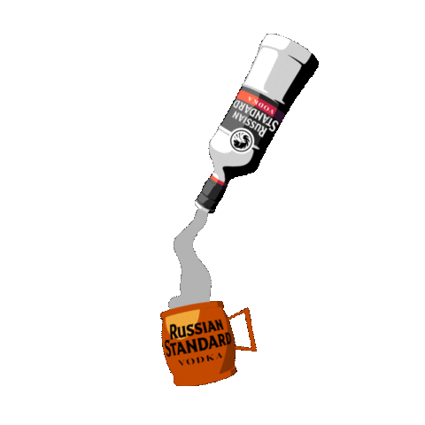

BOOZY BUTTERBEER! (Alcoholic Option)
Harry Potter fans, who are over 21 years old, are you not entertained?!
This boozy twist on the classic butterbeer is not to be missed! No doubt it will be a hit at your next Harry Potter themed party!
Ingredients
- FOR THE WHIPPED TOPPING
- 2 c. heavy cream
- 2 tbsp. packed brown sugar
- 1 tsp. pure vanilla extract
- 2 tbsp. melted butter
- Gold sanding sugar, for garnish
- Butterscotch syrup, for garnish
- FOR THE PUNCH
- 6 (12-oz.) cans cream soda
- 3 (12-oz.) cans seltzer
- 3 1/2 c. vanilla vodka
Instructions
- In a large bowl, combine cream, brown sugar and vanilla. Using a hand mixer, whip until soft peaks form. Fold in melted butter and set aside.
- In a punch bowl, combine cream soda, seltzer, and vodka. Top with whipped cream and a sprinkle of gold sanding sugar. 
- Drizzle butterscotch syrup on rim of mugs. Serve punch and top with additional sanding sugar and butterscotch syrup, if desired.
Dietary Info
Contains dairy
Contains alcohol
Serving Size
9 servings